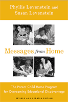

<body bgcolor="#FFFFFF" text="#000000" link="#0000FF" vlink="#CC0000" alink="#CC0000"><center><hr width="350" size="1" align="center" noshade>An up to date overview of one of the longest-running home visiting programs, emphasizing school readiness and early literacy in toddlers<hr width="350" size="1" align="center" noshade><p><a href="https://cdcshoppingcart.uchicago.edu/Cart/ChicagoBook.aspx?ISBN=9781592136766&&PRESS=temple" target="_top">Buy this book!</a> | <a href="https://cdcshoppingcart.uchicago.edu/Cart/Cart.aspx?PRESS=temple" target="_top">View Cart</a> | <a href="https://cdcshoppingcart.uchicago.edu/Cart/Cart.aspx?PRESS=temple" target="_top">Check Out</a></p><p></p></center><!--none//--><h1>Messages from Home</h1>
<H2>The Parent-Child Home Program for Overcoming Educational Disadvantage</H2>
<H2>Revised and Updated Edition</H2>
<h3>Phyllis Levenstein and Susan Levenstein</h3>
<P>cloth 1592136761 $84.50, Apr 08, <FONT COLOR=#990033>Available</FONT>
<br>paper 159213677X $32.95, Apr 08, <FONT COLOR=#990033>Available</FONT>
<br>Electronic Book 1592136788 $32.95 <FONT COLOR=#990033>Available</FONT>
<BR> 288 pp
6x9
8&nbsp;tables
</P><BLOCKQUOTE><I><p>"Leading scholars disagree about the value of home-visiting services in improving child development. This book presents an evaluation of one of our nation's oldest and most theoretically sound home-visiting programs, adding evidence that home visiting is a worthwhile strategy for the early years. Must reading for scholars, practitioners, and policymakers."</I> <br>&#151<b>Edward Zigler, Ph.D.</b>, Sterling Professor of Psychology, Emeritus, Yale University
<p><i>"This new edition of </i>Messages From Home<i> documents Dr. Phyllis Levenstein�s unique understanding of the importance of early parent-child relationships and the value of creating language-rich home environments. The forty years of evaluation summarized in the book demonstrate that the program is as effective and relevant today as it was in 1965."</I> <br>&#151<b>Sarah E. Walzer</b>, Executive Director, The Parent-Child Home Program</I></BLOCKQUOTE>
<p>The Parent-Child Home Program, a pre-preschool home visiting program, has grown greatly since the first edition of <i>Messages from Home</i> was published in 1988. This expanded and updated edition describes the continued success and expanded research base of this program-spearheaded by the late Phyllis Levenstein-which prepares at-risk children for school success, overcoming educational disadvantage.
<p>Since The Parent-Child Home Program was founded in the 1960s, it has enriched the cognitive, social, and emotional school readiness of tens of thousands of children. The Program's methods, its theoretical underpinnings, and its impressive results are presented in detail and the success stories of both parents and children make inspiring reading, while a combination of lively writing and data-driven scientific rigor give it both broad appeal and academic relevance.
<BR>&nbsp;<h2>Excerpt</h2><P>Excerpt available at <a href="http://www.temple.edu/tempress">www.temple.edu/tempress</a></p>
<BR>&nbsp;<h2>Reviews</h2>
<p><i>"</i>Messages From Home<i> is a fascinating book, documenting this important program from the inspiration and the needs it meets to the nuts and bolts of the ethical issues it raises."</i>
<br>&#151<b>Marsha Weinraub</b>, Laura H. Carnell Professor, Chair of the Psychology Department at Temple University and investigator on the NICHD Study of Early Child Care
<p><i>"</i>Messages From Home<i> depicts a thriving, growing, and remarkably effective program that helps busy parents connect with their children through play. By focusing on playful talk during the critical years when children are learning language, this program primes children to succeed despite the many obstacles associated with poverty. I will treasure this well-referenced book and its evocative stories of parents, children, and home-visitors playing and growing together."</i>
<br>&#151<b>Betty Bardige</b>, author of <i>At a Loss for Words: How America Is Failing Our Children and What We Can Do about It</i>
<p><i>�</i>Messages from Home<i> is an important resource for those interested in child development and education. For researchers and for those who are beginning their careers in research, it demonstrates what can be learned through a well-thought out and well-conducted longitudinal investigation. Further, it provides insights about how Phyllis Levenstein and her colleagues grappled with issues of randomization, adequacy of research measures, fidelity of implementation, and the ethics of working with families. For practitioners and others who might want to replicate the Parent-Home Program, there is enough detail provided to make that decision. Finally, policy makers can learn about a very low cost intervention that has had a long-term impact on children who are at risk for educational disadvantage and their families.�</i><br>&#151<b>Teacher�s College Record</b>
<BR>&nbsp;<h2>Contents</h2><P>
<br>Foreword
<br>Coauthor's Preface
<br>Prologue to the Second Edition
<br>Chronology
<br>Introduction
<br>1. Two Mothers, Two Children: Program Participants
<br>2. Poverty in the Twenty-First Century: Parental Love Fights Back
<br>3. "Show, Not Tell": The Parent-Child Home Program Method
<br>4. Underpinnings: The Theory behind The Parent-Child Home Program
<br>5. How Effective is The Parent-Child Home Program?
<br>6. Methodological Issues in Intervention Research: Lessons from The Parent-Child Home Program Experience
<br>7. From Laboratory to Real World: Successful Replication of a Successful Intervention
<br>8. Preventing a Dream from Becoming a Nightmare: The Ethics of Home Visiting Programs
<br>9. Ludic Literacy: Prelude to Instrumental Literacy
<br>10. Messages from Home: Meditations and Conclusions
<br>11. The Parent-Child Home Program in Writing: Publications by and about the Program, 1968-2007
<br>Appendix. Outcome Measures Created by The Parent-Child Home Program
<br>References
<br>Index
</P><BR>&nbsp;<H2>About the Author(s)</H2>
<table><tr><td valign="top"><img src="/tempress/authors/1924_au1.gif" height="90" width="75"></td><td width="100%" valign="middle"><p><b>Phyllis Levenstein, Ed.D.</b> (1916-2005), founded The Parent-Child Home Program in 1965. She was its Executive Director until 1997, after which she continued to work as the Program's Senior Investigator and as a clinical psychologist in private practice. Edward Zigler, the father of Head Start, describes her as "an icon" of the field of early childhood intervention, and Hillary Clinton has called her one of the United States' "finest child advocates, innovators, and clinicians."</P></td></tr></table><table><tr><td valign="top"><img src="/tempress/authors/1924_au2.gif" height="90" width="75"></td><td width="100%" valign="middle"><p><b>Susan Levenstein, M.D.</B>, is a primary care internist practicing in Rome, Italy, and a clinical researcher. She has published widely on the interactions between psychological and physiological factors in disease, and has collaborated with her mother on studies of The Parent-Child Home Program.</P></td></tr></table>
<BR><H2>Subject Categories</H2>
<p><A HREF="/tempress/education.html" TARGET="_top">Education</a>
<BR><A HREF="/tempress/family.html" TARGET="_top">Family Policy</a>
<BR><A HREF="/tempress/psycho.html" TARGET="_top">Psychology</a>
</p>
<p align="center"><a href="https://cdcshoppingcart.uchicago.edu/Cart/ChicagoBook.aspx?ISBN=9781592136766&&PRESS=temple" target="_top">Buy this book!</a> | <a href="https://cdcshoppingcart.uchicago.edu/Cart/Cart.aspx?PRESS=temple" target="_top">View Cart</a> | <a href="https://cdcshoppingcart.uchicago.edu/Cart/Cart.aspx?PRESS=temple" target="_top">Check Out</a></p><p><font face="Arial" size="1"><a href="copyright.html" onMouseOver="window.status='Web Copyright Policy';return true;" onMouseOut="window.status=''" title="Web Copyright Policy">&copy;</a> 2015 <a href="http://www.temple.edu" target="new" onMouseOver="window.status='Link to Temple University home page';return true;" onMouseOut="window.status=''" title="Link to Temple University home page">Temple University</a>. All Rights Reserved. http://www.temple.edu/tempress/titles/1924_reg.html</font></p>